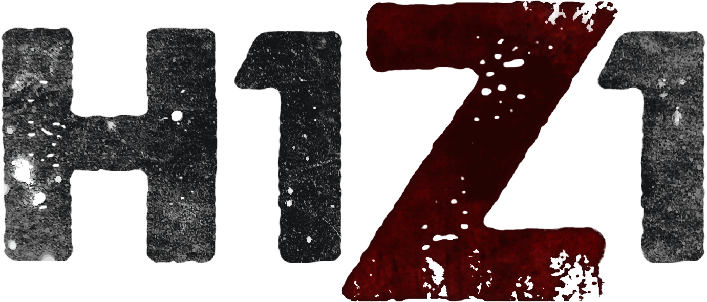

Game description on STEAM
Counter-Strike: Global Offensive (CS: GO) will expand upon the team-based action gameplay that it pioneered when it was launched 14 years ago. CS: GO features new maps, characters, and weapons
and delivers updated versions of the classic CS content (de_dust, etc.). In addition, CS: GO will introduce new gameplay modes, matchmaking, leader boards, and more. "Counter-Strike took the gaming industry by surprise when the unlikely
MOD became the most played online PC action game in the world almost immediately after its release in August 1999," said Doug Lombardi at Valve. "For the past 12 years, it has continued to be one of the most-played games in the world,
headline competitive gaming tournaments and selling over 25 million units worldwide across the franchise. CS: GO promises to expand on CS' award-winning gameplay and deliver it to gamers on the PC as well as the next gen consoles and the
Mac."
Adam Lundgren:
Even in the face of genre evolution, Global Offensive doesn’t care to adapt. CSGO is so dedicated to Counter-Strike's aging ideals despite market and trend changes that it brute-forces its way to success. Part of what makes it such an engaging
competitive game is that killing in Global Offensive requires a wholly different skill set than other shooters. Everyone is limited to what they have and can see, with little room for character modification or on-the-fly advantages. Running
and gunning is a useless play style, even if you've bought a helmet and kevlar that round, to the point that someone standing still is more likely to score the kill. Walking, crouching, or standing are your best bets to reduce the inaccurate
spray of machine-gun fire.
written: 2018-04-10
Johan Lindh:
Consequently, killing in Global Offensive feels good. There's a sickening sensation to dropping someone dead because you know they're not coming back. It's also satisfying knowing you used limited resources to play smarter than your victim.
If players aren't watching corners, providing covering fire, or using smoke grenades and flashbangs, they're more likely to take a headshot from a more delicate and patient triggerman. The desire to experience that distinct feeling is
a strong motivator to keep playing, even when you're getting steamrolled by an obviously better team.
written: 2018-02-10